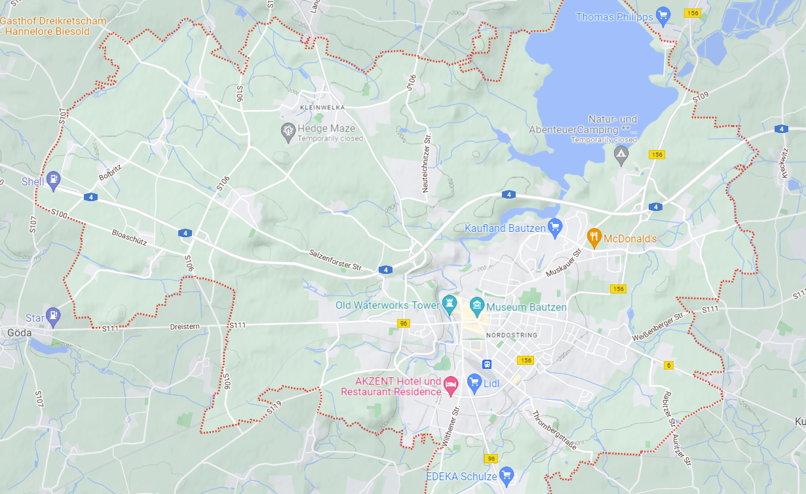
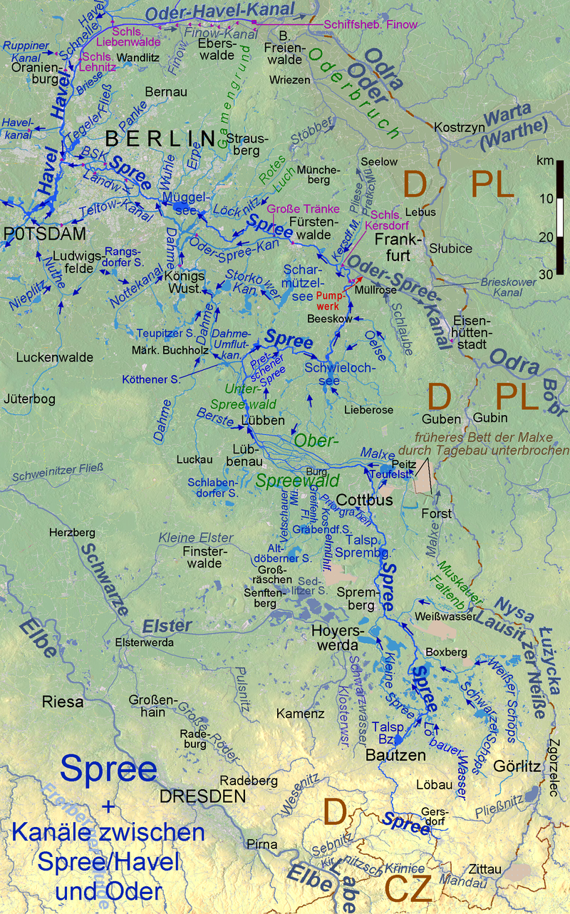
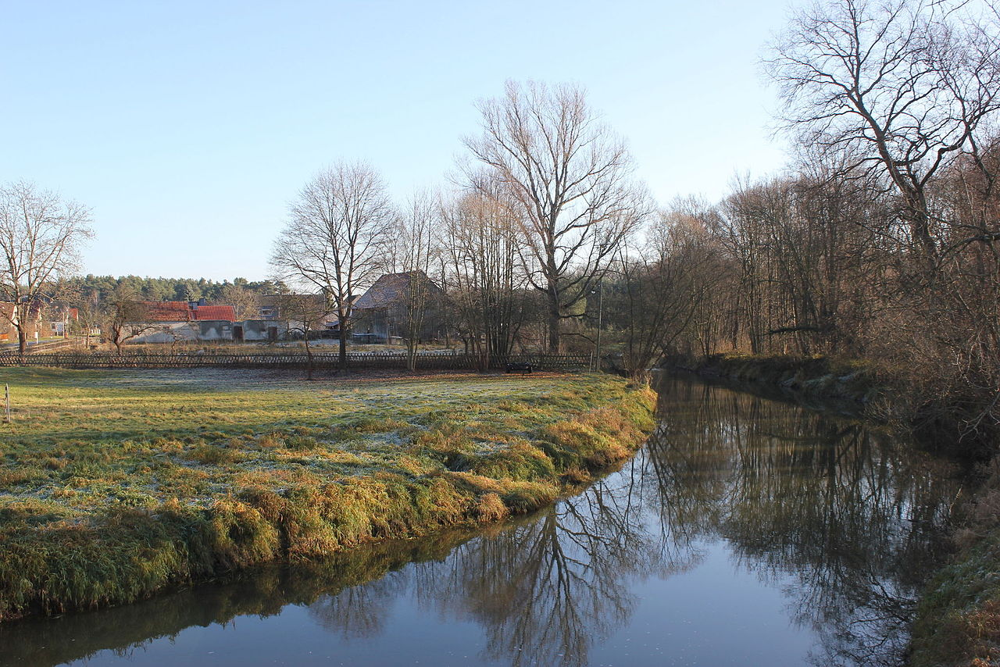
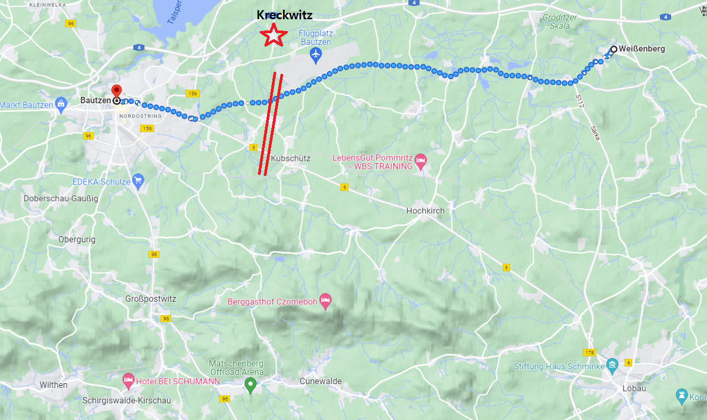
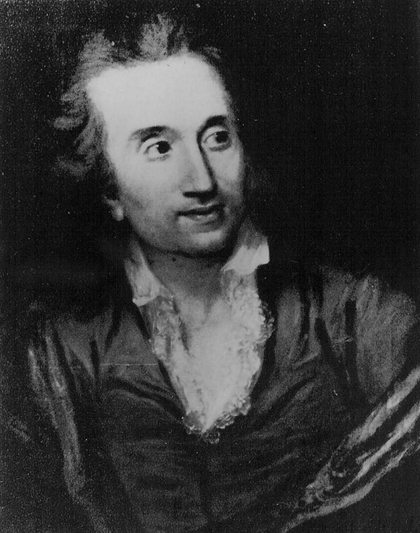

바우첸을 향하여 (9) - 바우첸 방어선 설계
게시: 2023-02-06T06:30:21+09:00

(캐쓰카트 백작입니다. 귀족 집안에 태어나 이튼 스쿨에서 교육받은 전형적인 영국 귀족인데 1771년 그가 16살일 때 러시아 대사로 부임한 아버지를 따라 상트 페체르부르그에 가면서 러시아와 연을 맺었습니다. 그는 불과 26세에 아버지가 사망하면서 작위를 물려받은 뒤, 27세라는 늦은 나이에 군 장교직을 구매하여 군에 투신하여 미국 독립전쟁에도 참전했습니다. 1807년 제2차 코펜하겐 원정에 육군 총사령관으로 참전하여 덴마크의 항복을 받아낸 공로로 자작이 된 그는 1812년 4성 장군으로 승진하면서 주러시아 대사로 임명되어 1814년까지 짜르의 사령부에서 행동을 같이 했습니다. 나폴레옹이 폐위되면서 전쟁이 끝나자 그는 1814년 백작 작위를 받았고, 그런 뒤에도 1820년까지 주러시아 대사로서 상트 페체르부르크에 있었습니다. 그는 87세까지 장수했습니다.) 당시 러시아군 사령부와 함께 움직이던 주러시아 영국 대사 캐쓰카트(William Schaw Cathcart, 1st Earl Cathcart) 장군의 평가에 따르면 바우첸은 전략적 요충지라고 할 만한 곳이었습니다. 먼저 프로이센군은 물론 러시아군에게도 매우 소중한 후방 지역인 슐레지엔을 엄호할 수 있는 위치였고, 엘베 강처럼 큰 강은 아니었지만 스프레(Spree) 강을 낀 습지가 전방에 있어 적의 움직임을 어느 정도 방해할 수 있는데다, 그 스프레 강변을 제압할 수 있는 고지대가 바우첸 동쪽에 있었기 때문에 상대적으로 우위에 있던 연합군의 포병 화력을 잘 활용할 수 있는 지역이었습니다. 또, 바우첸 동편에 연합군이 남북으로 긴 방어선을 칠 때, 오른쪽은 탁 트인 벌판이라 연합군의 우세한 기병대가 활약하기 좋았고, 왼쪽은 오스트리아와의 국경지대인 보헤미아의 산맥이 멀지 않아 프랑스군이 우회하기가 부담스러운 지형이었습니다.

(바우첸은 남쪽 고지대와 북쪽 저지대 사이에 위치한 곳으로서, 특히 스프레 강 동쪽에 언덕들이 있어서 연합군 포병대가 자리잡기에 딱 좋은 지형이었습니다. 바우첸 북쪽에 보이는 큰 호수 같은 것은 1970년대에 댐을 건설하여 만든 저수지로서, 당시에는 그냥 저지대였습니다.)

(스프레(Spree) 강은 길이가 약 400km에 달하여 베를린까지도 닿지만 폭은 좁은 강으로서, 하벨(Havel) 강의 지류입니다. 하벨 강은 다시 엘베 강에 합류하는 강입니다. 스프레 강 유역을 그린 위 지도 저 아래 약간 오른쪽에 바우첸의 위치가 보입니다.)

(스프레 강이 어느 정도 규모의 강인지 보여주는 사진입니다. 바우첸 북쪽에서의 스프레 강입니다.) 비트겐슈타인이 선정한 연합군의 방어선은 두 개의 주요 동서 도로를 남북으로 가로지르는 위치였습니다. 즉 북쪽에서 바우첸-바이센베르크(Weißenberg)-괴를리츠-브레슬라우로 이어지는 도로와, 그 조금 남쪽에서 바우첸에서 혹키르히(Hochkirch)를 거쳐 뢰바우(Löbau)로 이어지는 도로를 바우첸에서 약 20km 정도 동쪽에서 남북으로 관통하는 방어선이었습니다. 혹키르히 일대는 상류 라우시츠(Oberlausitz, 영어로는 Upper Lusatia)의 산맥에서 이어지는 구릉지대의 중심지였고, 거기서 스프레 강 일대를 내려다 볼 수 있었습니다. 위에서 언급한 것처럼 그 방어선의 오른쪽 측면은 탁 트인 벌판이라 연합군의 우세한 기병대가 프랑스군의 우회 공격을 효과적으로 차단할 수 있었고, 왼쪽 측면은 오스트리아와의 가까운 국경선 뿐만 아니라 빽빽한 숲으로 덮힌 구릉지대로 보호되어 있었습니다. 또 이 방어선 곳곳에 놓인 마을들은 연합군에게 강력한 진지 역할을 해주었습니다. 한마디로, 이 방어선은 러시아군의 장기인 굳건한 방어전을 펼치기에 딱 좋은 형태였습니다. 생각해보면 러시아군이 재미를 본 전투들인 아일라우 전투와 보로디노 전투는 모두 방어전이었고, 참패를 겪었던 것은 모두 러시아군이 공격에 나섰다가 당한 것이었습니다. 가령 뤼첸 전투만 해도 나름 기습이라면서 공격을 하면서 벌어진 것이었지요.
비트겐슈타인은 거기에 좀더 창의적인 요소를 하나 더 붙였습니다. 연합군 방어선의 오른쪽 탁 트인 벌판 너머 크렉비츠(Kreckwitz) 마을 근처의 고지에 일부 병력을 매복시키기로 한 것입니다. 프랑스군의 좌익이 연합군 방어선의 우측을 공격해올 때 이 매복군이 프랑스군을 역으로 공격하면 매우 효과가 좋을 것이라고 판단되었기 때문이었습니다. 비트겐슈타인은 여기에 요크의 프로이센 제1 군단과 클라이스트의 프로이센-러시아 혼성군단, 총 1만1천에 달하는 병력을 매복시켰습니다.

(이 지도 위쪽에 점선으로 표시된 도로가 바우첸에서 바이센베르크, 이어서 괴를리츠로 연결되는 도로입니다. 그 밑에 혹키르히(Hochkirch)를 거쳐 뢰바우(Löbau)로 가는 도로가 보입니다. 두 줄의 붉은 평행선이 대략적인 연합군의 방어선입니다. 그 위에 크렉비츠 마을의 위치가 붉은 별로 표시되어 있습니다.)
하지만 바우첸에서 유리한 지형을 골라 나폴레옹과 건곤일척의 대결을 벌이겠다는 비트겐슈타인의 다짐과는 별도로, 연이은 후퇴에 대한 프로이센군의 불만은 이미 매우 높은 편이었습니다. 이런 군 내의 불만을 다독거리고 연합군의 결속을 공고히 하는 것은 프로이센군 총지휘관의 몫이었습니다. 그러나 그런 불평불만을 주도하는 사람은 당시 건강 때문에 잠깐 지휘권을 내려놓은 블뤼허를 대신하여 사실상 프로이센군의 총사령관 역할을 하던 그나이제나우 본인이었습니다. 비트겐슈타인 개인에 대해서는 물론이고 러시아군과 러시아인 자체에 대한 그나이제나우의 불신과 조소는 그때 즈음 거의 절정에 달했습니다. 그는 프로이센 총리인 하르덴베르크에게 보내는 편지에서 비트겐슈타인은 총사령관직을 수행할 그릇이 못 되며, 그 참모인 오브라이(Fedor d'Auvray)는 게을러 빠진 한심한 인간이라고 다음과 같이 대놓고 험담을 했습니다. "(뤼첸 전투 하루 전날인) 5월 1일, 제가 보르나(Borna)를 3번 방문했을 때 이 인간들은 그냥 쳐자고 있었습니다. 오후에도, 저녁에도, 아침에도요!" 그나이제나우는 바우첸 방어선에서도 특히 크렉비츠 언덕에 병력을 매복시키는 것에 대해 크게 반발했습니다. 양쪽 합산 20만 정도가 씨우게 될 전투에서 고작 1만 정도의 병력을 따로 매복시키는 것은 무의미한 병력 분산에 지나지 않는다고 비난하며, 만약 매복을 할 것이라면 4만은 매복시켜야 한다고 주장했습니다. 그러면서도 4만을 어떻게 적의 눈에 띄지 않게 매복시킬 수 있냐면서 언덕 훨씬 뒤쪽에 배치해야 하거나 아예 매복을 포기해야 한다고 하르덴베르크나 크네제벡 등의 프로이센 각료들에게 열을 올렸습니다. 그나이제나우는 하르덴베르크에게 아예 프로이센군과 러시아군이 결별하자고 주장할 정도로 러시아군을 싫어했습니다. 그의 계획은 차라리 러시아군에게 폴란드로 후퇴해버리라고 권고하고, 자기들끼리 슐레지엔의 몇몇 요새 - 실버베르크(Silberberg), 글라츠(Glatz), 나이싸(Neiße) - 에서 농성하자는 것이었습니다. 나폴레옹의 주력부대는 러시아군을 쫓아 폴란드로 가버릴 테니, 자신들은 슐레지엔에서 잔존 프랑스군과 대치하다가 브란덴부르크 등 프로이센 다른 지역에서 지원군으로 몰려올 국민방위군(landwehr) 병력과 합세하여 스페인에서처럼 민중 봉기를 이끌 수 있다는 주장이었지요. 물론 이건 샤른호스트라면 고개를 저었을 무모한 계획이었습니다. 스페인식 민중 봉기는 프로이센 국민들에게 엄청난 희생을 강요하는 하책인데다, 무엇보다 나폴레옹이라면 당연히 러시아군을 추격하기 전에 고립된 프로이센군을 산산조각 내었을 것이기 때문이었습니다. 하르덴베르크도 완곡한 답장을 써서 슐레지엔에서 스페인식 게릴라전을 펼치는 것은 매우 어려운 일이 될 것이며 슐레지엔의 요새들에서 농성하자는 것은 어디까지나 최후의 수단이라며 그나이제나우를 타일러야 했습니다. 그것으로는 부족하다고 생각했는지, 하르덴베르크는 신뢰하는 심복인 히펠(Theodor Gottlieb von Hippel)을 보내 그나이제나우와 그의 참모 클라우제비치를 앉혀 놓고 러시아 및 오스트리아와의 동맹 등에 대해 심도있는 대화를 나누게 했습니다.

(하르덴베르크의 심복 히펠은 흔히 소(少)히펠이라고 불렸습니다. 이유는 노(老)히펠이 더 유명했기 때문인데, 그와 같은 이름을 가진데다 소(少)히펠의 교육을 맡았던 큰아버지가 유명한 풍자 작가였습니다. 히펠 집안은 원래 귀족이 아니었습니다. 아버지 히펠은 목사였고, 칸트의 제자이자 친구이기도 했던 큰아버지 노(老)히펠은 쾨니히스베르크에서 가정교사 생활을 했습니다. 그러다 노(老)히펠이 젊은 시절 어떤 귀족 아가씨에 대한 짝사랑에 빠져, 출세하겠다는 일념으로 법률 공부를 시작하여 마침내 쾨니히스베르크의 시정에 진출하는 등 출세를 했고, 1790년, 즉 소(少)히펠이 15살 되던 해에는 집안이 귀족 작위를 받게 되었습니다. 그러나 정작 노(老)히펠은 출세를 하자 그 귀족 아가씨에 대한 애정이 식어서 평생 홀로 지냈다고 합니다. 소(少)히펠은 큰아버지의 글재주를 이어 받았는지 프리드리히 빌헬름이 1813년 전쟁을 시작하며 발표한 유명한 포고문 '나의 국민에게'(An Mein Volk)의 작성자가 바로 소(少)히펠입니다.) 이렇게 연합군끼리의 불신까지 극심한 상황에서 과연 승리를 거둘 수 있었을까요? 언제나 그렇지만, 나폴레옹 쪽도 상황이 그리 좋지 않은 것은 마찬가지였습니다. Source : The Life of Napoleon Bonaparte, by William Milligan Sloane Napoleon and the Struggle for Germany, by Leggiere, Michael V
https://cs.wikipedia.org/wiki/William_Cathcart,_1._hrab%C4%9B_Cathcart https://en.wikipedia.org/wiki/Battle_of_Bautzen_(1813) https://en.wikipedia.org/wiki/Bautzen https://www.mrs.org/docs/default-source/careers/awards/arthur-robert-von-hippel-website/1-ancestry-and-early-years.pdf https://en.wikipedia.org/wiki/Theodor_Gottlieb_von_Hippel_the_Younger https://en.wikipedia.org/wiki/Theodor_Gottlieb_von_Hippel_the_Elder